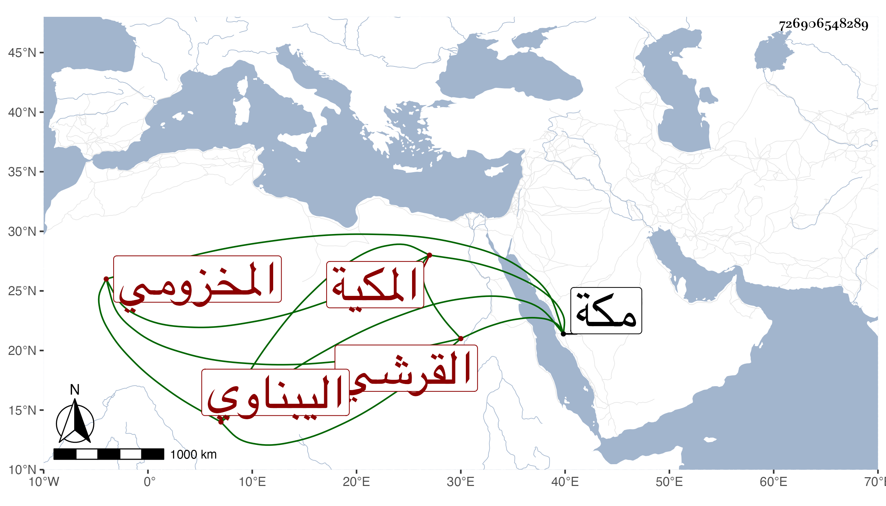

0902Sakhawi.DawLamic.ITO20230111-ara1.EIS1600.726906548289
Biography ID: 726906548289
893
أم الخير ابنة عبد اللطيف بن موسى بن عميرة بن صالح القرشي المخزومي اليبناوي المكية الماضي أبوها وأختها أم الحسين . ولدت في ذي الحجة سنة ثمان وتزوجها ابن عمها علي بن محمد بن موسى ومات عنها ثم أضرت . وماتت في جمادى الأولى سنة خمس وسبعين بمكة ، أرخها ابن فهد .
